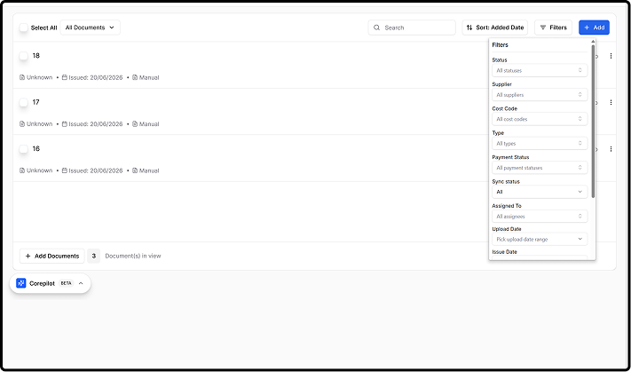
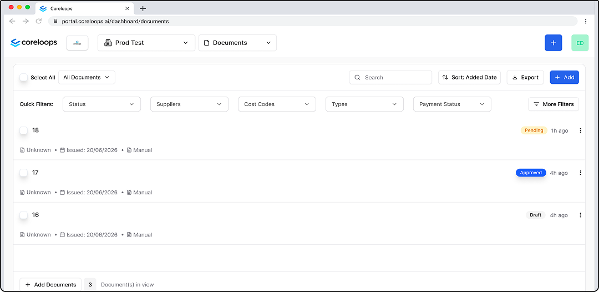
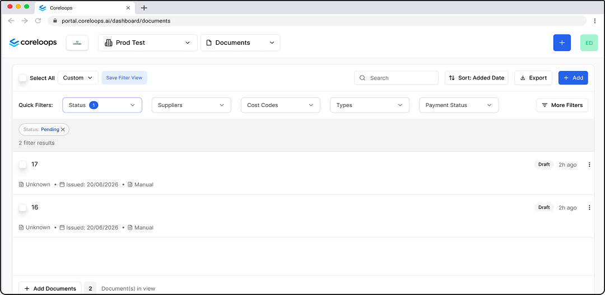
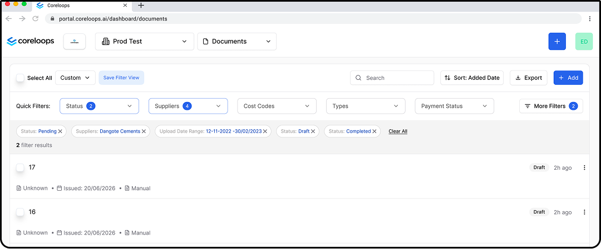
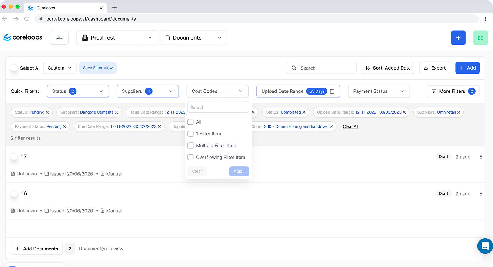
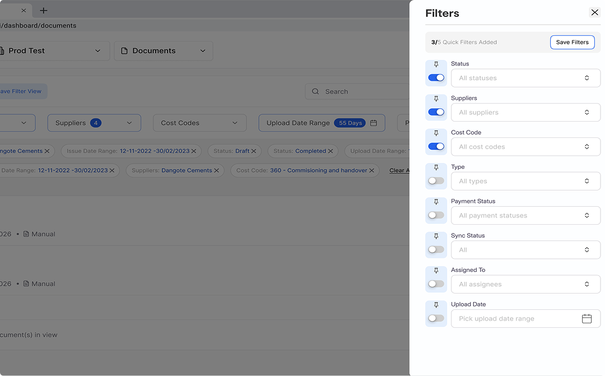
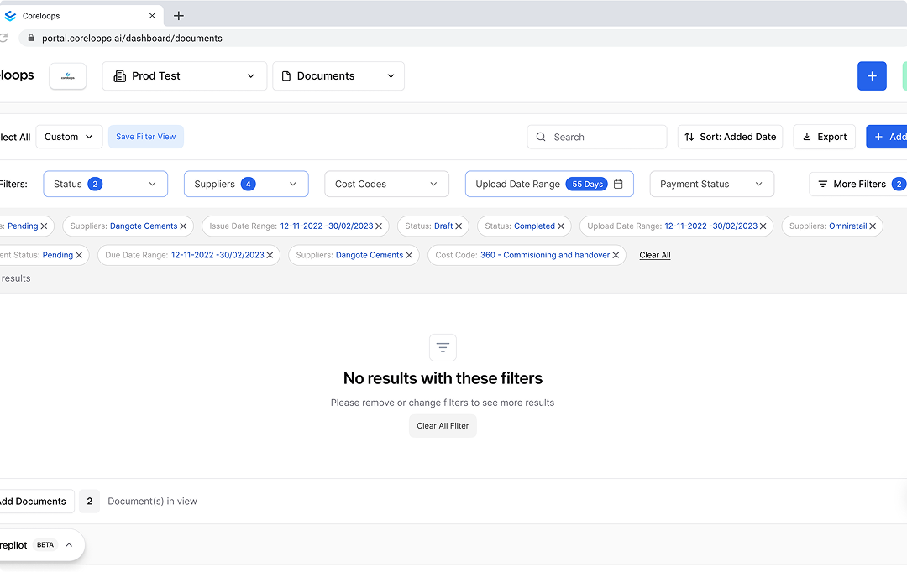

Client Project · Coreloops
View Figma PrototypeTaking The Most-Used Filters From A Drawer To Zero Clicks
Coreloops' documents page filter panel treated all 13 filter options as equal, funneling every user, whether they needed one filter or six, through the same right-side drawer: configure in isolation, apply, then return to see results. But most users only needed 1–2 filters at a time; only a minority needed 5–6 simultaneously. I redesigned the filter experience around that split.
Coreloops is a construction finance platform that helps project teams manage invoices, purchase orders, and financial documents across multiple sites and suppliers. The documents page, letting users find a specific record among potentially hundreds, is one of its most-used features.
The Problem
The right-side drawer pattern forces a context switch on every filter attempt, open, configure in isolation, apply, then return to see results. That's reasonable for complex query-building, but creates friction for users who just want to narrow by a single dimension, or who frequently switch between combinations.
Major Problem 1
All 13 filters treated as equal, categorical filters, date ranges, and boolean toggles listed vertically with no hierarchy, regardless of how often each is actually used.
Major Problem 2
The drawer occludes the list, users lose sight of the results they're trying to narrow while they're configuring the filter meant to narrow them.

Target Users
Site Managers
Need to find documents tied to a specific site or supplier quickly, often mid-conversation or mid-task.

Project Accountants
Work across cost codes and payment statuses, typically the users applying more filters simultaneously.

Finance Managers
Need reliable, repeatable views across suppliers and sites for oversight and reporting.

Constraints & Proposed Solution
Constraints
Primarily desktop, but tablet can't be ignored. The filter set itself (Status, Supplier, Cost Code, etc.) had to stay the same, this was a reorganization brief, not a scope cut. Most users apply 1–2 filters; some apply 5–6 at once. Current design: a right-side drawer with a single batch Apply button.
Proposed Solution (MVP)
Revamp the documents page filter experience to let users locate any document with minimal clicks, prioritizing speed and familiarity for new, casual, and advanced users alike, without losing any existing filter option.
My Solution
The core idea: separate filters by frequency of use. Five customizable filters live as persistent inline chips directly in the toolbar, always visible, filtering on selection. Each chip opens a scrollable dropdown where users make a selection and click Apply to see the list update immediately below it. Every other filter moves into a focused "More Filters" modal, grouped by theme.
Rest State
Nothing applied yet. The five Quick Filter chips sit in the toolbar, one click from use, while every other filter waits behind More Filters.

1 Filter State
One chip applied. The chip shows a count badge, a single dismissible pill appears in the active filter strip, the result count updates at the top of the list, and Save Filter View becomes available.

Multiple Filter State
Several filters stacked. Each chip carries its own count, every active value shows as a pill with a Clear All link at the end of the strip, and More Filters shows how many of its own filters are on.

Notable Changes
Persistent Inline Chips
Five customizable "Quick Filters" sit directly in the toolbar, always visible, zero clicks to reach. Each chip opens its own small dropdown with its own Apply button, updating the list immediately below.

More Filters
Maintains the original drawer interaction while adding structure, every remaining filter (Cost Code, Sync Status, Assigned To, date ranges, three toggles) organized into five scannable sections: Documents, Ownership, Financial, Dates, Flags. Users can also customize their Quick Filters from here.

Active Filter Strip
Dismissible pills between the toolbar and the document list, the single source of truth for what's active, whether set via a chip or via More Filters. Pills dismiss individually; a "Clear all" link sits at the strip's end.
Filter Results Count
Moved to the top of the list so users see how many results match without scrolling down to find it.
Save Filter View
Once a filter is applied, a "Save" option appears so users can store the combination and return to it from the custom dropdown next time, in addition to the "+" custom-view option already in the dropdown.
Export (CSV)
Added an export button so users can pull the table contents out as CSV, an accessibility improvement outside the original filter brief.
Edge Cases
Zero-Results State
When a combination matches nothing, the list says so plainly and offers a Clear All Filter button, so users can back out in one click instead of dismissing pills one by one.

Filter Count States
The chips and the pill strip were designed for one value, several values and an overflowing selection, so counts stay readable however many values a user applies.
Flagged, not fixed
During this work I couldn't find a way to rename a document anywhere in the product. That's outside this brief's scope, but worth flagging rather than quietly ignoring.
Also Flagged
First-time navigation to the documents page itself took longer than expected to discover. I'd recommend a product tour to orient new users to where core features live, separate from this filter work.
The One Decision
I chose to require an explicit Apply action on every filter surface, including the fast, always-visible toolbar chips, rather than auto-applying a filter the moment it's selected, even though auto-apply would save a click for the single-filter case that is Coreloops' most common usage pattern. Auto-apply is faster in isolation, but it fails as a system: it would mean chips and the More Filters drawer behave differently from each other, and finance users managing high-stakes documents are exactly the audience most disoriented by a list that mutates under them mid-click. One consistent extra click bought zero disorientation across the whole surface.
Trade-offs
Apply Everywhere vs. Speed
Consistent Apply behavior across chips and More Filters costs one extra click per interaction, but removes disorientation and fits the deliberate, precise nature of finance users.
Customization vs. Discoverability
With Apply on chips, both power and first-time users get a familiar select-then-confirm pattern, the same behavior they already expect from the original drawer.
Result Count vs. Duplication
Surfacing the count in the toolbar removes the need to scroll, but feels repetitive and adds one more element competing for toolbar space.
Export Button Added
Improves accessibility and utility. Trade-off is toolbar real estate, every addition competes with the primary filter actions.

Things To Explore

Search Inside More Filters
The five scannable sections work well for most users. A power user who knows exactly what they want would benefit from a search box inside the drawer, not built yet.
Explicit Save vs. Auto-Save
Users have to consciously save filter presets, which can be tedious to remember. Worth exploring auto-save or a "previously used combinations" list.
Filter Strip vs. Content Density
On sessions with many active filters, the strip consumes vertical space that could otherwise show another document row. Worth exploring a collapse/expand control.
What I'd Measure
To validate before this ships: time-to-first-result, and how the drawer/More Filters open rate trends over time, a declining open rate would mean the quick filters are absorbing most of what people actually need.
What Would Prove This Wrong
The five-pin quick-filter cap and its defaults are informed assumptions, not confirmed data. If usage data showed most users regularly needed more than five pinned filters at once, the cap itself would need to move, not just which filters are pinned by default.
Conclusion
This redesign trades a monolithic drawer for a hierarchy that matches how people actually filter: fast, role-specific chips up front, full options organized behind More Filters. Apply stays consistent across both surfaces, one extra click, but zero disorientation, which matters for a user group managing high-stakes financial documents. The active filter strip and the always-visible result count exist for the same reason: users should always see what's narrowing their list, and always have a one-click way out.
Status: Delivered to Coreloops as a proposed redesign with a working Figma prototype, not yet shipped. The five-pin cap and quick-filter defaults are flagged as assumptions to confirm against real usage data before release.
View Figma PrototypeOther Projects